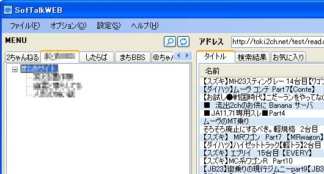

SofTalk WEBでの設定方法 SofTalk Webをインストールしたフォルダに有るdatフォルダのsite.iniというファイルをメモ帳などのテキストエディタで開きます。そして次のテキストをコピーしてsite.iniの適当な場所に貼り付けて下さい（１度クリックすると全選択されます）。例では２ちゃんねるとしたらばの間に貼り付けていますが、お好みでどうぞ。 貼り付けたら、保存をしてメモ帳などのテキストエディタを終了します。 「BBS_TITLE」というタブができますので、クリックして選択します。 設定しただけでは板のデータが読み込まれていませんので、板情報の更新ボタンをクリックします。  板の情報が表示されます。板の追加や変更が有ると、更新ボタンをクリックすれば最新の内容に変わります。 レス書きスレ立ては普通にできます。 |